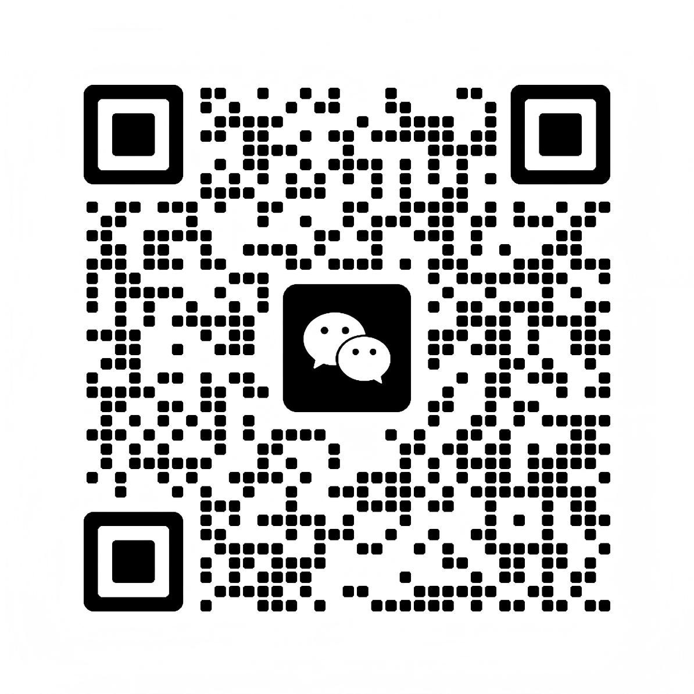

基础层01
AIGC 赋能陪跑计划
标准化服务 · 会员制订阅
AIGC 学习框架资料包
建立基础概念与工具应用的学习框架。
实战方法论体系
覆盖内容策划、提示词与质量控制。
精选工具矩阵
围绕图文、音视频等任务选择工具。
技术支持与答疑
在项目实践中解决具体操作问题。
案例学习与复盘
结合应用案例，积累可复用的方法。
WHY CO-CREATION
从一次性交付到持续能力建设，让团队成为 AIGC 的共建者。
| 对比维度 | 传统外包模式 | 华阳智瞰陪跑模式 |
|---|---|---|
| 交付积累 | 内容成品 | 内容成品 + 方法 + 工作流 |
| 合作重点 | 围绕单次项目交付 | 围绕业务任务持续实践与迭代 |
| 客户角色 | 提出需求与验收内容 | 参与生产、审核与复盘 |
| 能力建设 | 以本次内容质量为重点 | 同时积累团队自主生产能力 |
THE 2.0 UPGRADE
从 1.0 到 2.0，看看服务内容与客户价值的变化。
| 对比维度 | 1.0原有服务 | 2.0当前版本 |
|---|---|---|
| 服务重点 | 学习工具，完成单项创作 | 围绕业务任务，串联完整生产流程 |
| 执行方式 | 人工操作、分步调用工具 | 将方法与规则集成到 Skills，衔接重复执行 |
| 品牌一致性 | 每次传达风格与内容要求 | 将品牌规范融入可复用的生产流程 |
| 交付积累 | 作品、提示词与操作经验 | 作品、工作流、质量标准与品牌资产 |
| 客户价值 | 掌握 AI 创作方法 | 减少重复操作，提高团队协作与复用能力 |
三层核心服务架构
从标准化学习到企业部署，匹配不同阶段的 AI 应用需求。
资料 + 方法论 + 工具组合，从首个任务建立基础认知。
标准化服务 · 会员制订阅
建立基础概念与工具应用的学习框架。
覆盖内容策划、提示词与质量控制。
围绕图文、音视频等任务选择工具。
在项目实践中解决具体操作问题。
结合应用案例，积累可复用的方法。
个性化解决方案 · 深度陪跑
基于企业现有工作流设计集成方案。
将品牌调性、视觉风格与规范融入生产。
约定投入产出的评估口径与记录方式。
在真实项目中训练团队，沉淀执行方法。
OpenClaw 咨询 · 企业部署
围绕企业需求规划 AI 应用与基础设施。
结合业务要求设计专属部署方案。
将 AI 能力与现有业务系统衔接。
建立视觉知识库、提示词库与风格库。
根据使用反馈优化功能、工具与流程。
作为企业 AI 智能体方案中的技术选择之一，结合具体需求开展架构咨询、部署与集成。实施范围、支持方式与交付周期按服务方案确定。
PROCESS
每个阶段围绕实际任务推进，让团队在项目中掌握生产流程。
实施范围与阶段产出以双方确认的项目方案为准。
FOR DIFFERENT TEAMS
从资料、方法与工具应用开始，在实际任务中逐步建立 AIGC 基础能力。
结合品牌要求与现有生产流程，共建企业专属 AIGC 工作流与内容资产。
围绕专属部署、系统集成与知识资产，规划企业 AI 应用的实施路径。
INDUSTRY APPLICATIONS
围绕真实业务需求选择场景，将内容能力落到具体任务中。
品牌图文与产品内容
场景表达与系列视觉
产品展示与使用说明
知识内容与事实核验
风格表达与营销素材
结合实际需求定制
以下为交付方向，具体成果与项目范围共同确认。
从需求到生成、审核与交付，形成团队可执行的流程。
积累品牌规范、模板、提示词与视觉素材。
通过共同实践与复盘，形成可复用的操作与协作方法。
TECHNOLOGY × AESTHETICS
把 AI 生产方法与商业视觉要求结合起来，让内容质量、执行效率与团队协作在同一套流程中衔接。
从实际任务出发，选择工具、设计流程与集成方式。
将品牌视觉语言与内容质量标准融入生成和审核环节。
通过共同操作、反馈与复盘，把方法与经验留在团队。
品牌图文与视觉表达
脚本、画面与制作流程
围绕内容任务组合工具
连接知识、系统与协作
品牌规范 · 工具应用 · 质量控制 · 资产沉淀
LET’S WORK TOGETHER
带上你的业务目标，一起明确适合团队的 AI 应用起点。
咨询方向：AIGC 陪跑

查看清晰二维码扫码添加顾问，沟通业务需求。
杭州市·临平区
AIGC 侧重内容生产与团队能力建设；GEO 侧重围绕 AI 搜索需求建设品牌内容，并持续观察提及与引用。两项服务可以按业务需要衔接。
可以先从一个明确的图文或视频任务开始。根据团队基础选择快启包、赋能陪跑或定制服务，再逐步扩大应用范围。
先约定项目目标与评估口径，再记录制作时间、审核情况、产出质量及可用业务数据。具体结果取决于场景、素材与执行条件。